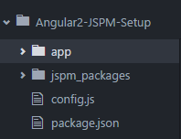

Angular 2 Starter Setup with JSPM, SystemJS and Typescript in atom (Part 1)
28 Jan 2016This blog post will be about the setup of angular 2 with jspm and systemjs. In this post we will use the angular version 2.0.0-beta.1. This version might not work correctly for the IE. If you want to develop for the internet explorer you may want to use beta.0.
Prerequisites
Setting Up Atom
If you haven't already downloaded atom, please navigate to: atom.io. Next you have to install some packages within your editor. Hit 'ctrl + ,' to manover to your settings. Then select install and download: Atom-Typescript. As you can see there are a lot features that comes with the package. My personal favorite is the autocompletion and live error analysis.Setting up the Project
At first we create a folder called Angular2-JSPM-Setup and navigate our terminal to the folder. Within our terminal we run the follow commands:npm install jspm -g
jspm init -yFor more information see: JSPM
JSPM init is used to initialize our project. The -y flag is used to answer all the init questions with yes. If you want you can call jspm init without the -y flag and discover, what jspm lets you configure.
After you have executed these commands create an app folder within you root folder (Angular2-JSPM-Setup). Your project should now look like this: 
Now we will change the config.js a little bit to make it compatible with our following typescript files. To do that copy the following code and paste it in the System.config:
typescriptOptions: {
"tsconfig": true // indicates that a tsconfig exists that should be used
},
packages: {
"app": { // all files within the app folder
"main": "bootstrap", // main file of the package (will be important later)
"format": "system", // module format
"defaultExtension": "ts", // default extension of all files
"meta": {
"*.ts": { // all ts files will be loaded with the ts loader
"loader": "ts"
},
"*.css": {
"loader": "css"
},
"*.html": {
"loader": "text"
}
}
}
},
And finally we will create tsconfig file within our root folder. This file is used to give the typescript compiler some informations about our environment.
{
"compilerOptions": {
"target": "es5", /* target of the compilation (es5) */
"module": "system", /* System.register([dependencies], function) (in JS)*/
"moduleResolution": "node", /* how module gets resolved (needed for Angular 2)*/
"emitDecoratorMetadata": true, /* needed for decorators */
"experimentalDecorators": true, /* needed for decorators */ (@Injectable)
"noImplicitAny": false /* any has to be written explicity*/
},
"exclude": [ /* since compiling these packages could take ages, we want to ignore them*/
"jspm_packages",
"node_modules"
],
"compileOnSave": false /* on default the compiler will create js files */
}
Note: The comments in the tsconfig file might give you an error, so you better delete them.
To get all the packages we need for development, we will use jspm install. To find out what packages are currently available with the jspm installer you can use the jspm-registry. So now lets run some more code in our terminal:
jspm install ts
jspm install angular2Normally this is everything you need for your project setup but there is currently an error with the module resolution. So we need to at the following lines to our package.json file:
"dependencies": {
"angular2": "2.0.0-beta.1",
"es6-promise": "^3.0.2",
"es6-shim": "^0.33.3",
"reflect-metadata": "0.1.2",
"rxjs": "5.0.0-beta.0",
"zone.js": "0.5.10"
}
Now call npm install within your terminal and all dependencies will be downloaded for your project. Sadly we have duplicated all our angular2 dependencies, but this is necessary since the live error analysis will throw errors as soon as we import a module from the angular2 package.
Note: Our code would also run without the angular2 files from the npm install BUT the live error analysis will show an error for every angular2 module we want to use. This could be really confusing so i would recommend to install angular2 via npm too. I hope that this bug will be solved in the future because jspm is probably the best frontend package manager. If you are from the java world it mostly feels like maven.
Writing Some Code
Now that we've got everything wired up we will write some code. At first we create a index.html file at our root folder with the following code:
<!doctype html>
<html>
<head>
<title>My First Angular2 App</title>
<script src="node_modules/angular2/bundles/angular2-polyfills.min.js"></script>
<script src="jspm_packages/system.js"></script>
<script src="config.js"></script>
</head>
<body>
<!-- this will be our entry component for the application -->
<app></app>
<script>
System.import('app').then(null, console.error.bind(console));
</script>
</body>
</html>
import { bootstrap } from 'angular2/platform/browser';
import {AppComponent} from "./app.component";
bootstrap(AppComponent);
import {Component} from 'angular2/core';
@Component({
selector: 'app',
template: '<p>Hello World</p>'
})
export class AppComponent {
constructor() { }
}
.PNG)
Running The Application
To run our Application we execute the following commands:npm install live-server -g
live-serverIn the next part of this tutorial we will use SystemJS Hot reloader, so that we don't have to wait 5 seconds until every change to our app is published. Furthermore we will use the bundling of jspm to generate a minified js file of our application.